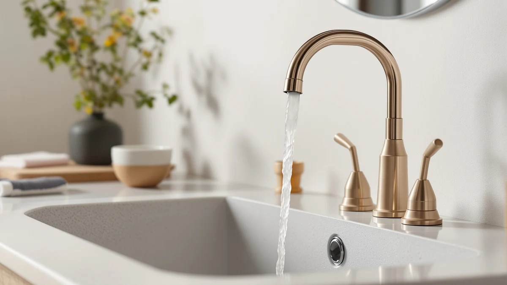

The Best Sink Faucets Under $200 (2026)
Prices and picks verified as of August 2026. Independent, reader-supported reviews.


Quick Answer
The Delta Nicoli Matte Black is the best sink faucet under $200 for most bathrooms, pairing a brass body with a modern matte finish at $184.80. If you want a warmer metal tone, the Delta Arvo Brushed Gold is a close runner-up at $163.71, and the Moen Revyl Chrome covers the same brass reliability for nearly a third of the price.
Our pick: Delta Nicoli Matte Black Bathroom, $184.80 Check Price on Amazon
Bottom line: our top pick is the Delta Nicoli Matte Black Bathroom Faucet 3 Hole at $189.90. The best budget option is the Faucet Extender for Toddlers - Sink Extender for Kids Hand at $5.66.
Things to Know Before You Buy
- Brass bodies cost more but last longer. Every full-size faucet in this guide uses a brass body rather than the zinc-alloy or plastic construction found in the cheapest listings, which is the main reason the best sink faucets under $200 tend to sit well above the $20 shelf.
- Finish changes the price more than function does. Matte black and brushed gold, like the Delta Nicoli and Delta Arvo here, cost more than plain chrome mostly because of the finish, not because the faucet works any differently.
- Check your mounting before you shop. A single-handle faucet like the Moen Revyl needs one hole, while a centerset model like the second Fransiton pick needs three holes spaced 4 inches apart. Measure your sink first so you do not buy a faucet you cannot install.
- Not everything on this list is a full faucet. The SKYROKU and Fansoftiks picks are inexpensive extenders that attach to your existing faucet to help kids reach the sink on their own, and we have included them for households shopping for a full faucet upgrade alongside kid-friendly accessories.
Finding the best sink faucets under $200 comes down to a handful of variables that actually matter: body material, finish durability, and whether the mounting style fits the holes already drilled into your sink or vanity. Most faucets in this price range look similar in photos, but the difference between a faucet that still works smoothly in five years and one that starts dripping in year two usually comes down to what is inside, not what you see on the shelf.
After comparing seven products across price, brass construction, and finish, the Delta Nicoli Matte Black at $184.80 is our top pick for most bathrooms. It gives you a modern matte finish and Delta's brass build quality for less than the ceiling of this budget, without pushing you into the compromises that show up in $20 and $30 faucets.
The rest of this guide covers the alternatives: a brushed gold runner-up from the same Delta family, a budget-friendly Moen single-handle pick at a fraction of the price, two Fransiton faucets for centerset and short-spout setups, and two low-cost extenders that help kids reach an existing sink faucet on their own. Whatever your sink looks like and whoever uses it, one of these fits.
Why You Should Trust Us
The editorial team at Best Bathroom Faucets put this guide together, and we spend our time comparing the sink faucet section of Amazon so you do not have to. For this roundup we set a hard ceiling of $200 and looked at sink faucets and faucet accessories you can buy right now, reading through the product specifications, brand history, and verified customer reviews for each one.
We are an affiliate site, and we earn a commission when you buy through our links. That arrangement never changes which products we recommend or what we say about their weak points. When a faucet on this list is a poor fit for a particular bathroom, or when a pick functions as an accessory rather than a full faucet, we say so plainly instead of dressing it up.
How We Picked
We started with the $200 ceiling and worked backward from there, comparing brass construction, finish options, and handle configuration across the field of bathroom sink faucets available on Amazon right now.
Body material came first. We prioritized faucets built on brass, which resists corrosion and mineral buildup far better than the zinc-alloy or plastic internals found at the bottom of the market. Every full-size faucet in this guide, from the Delta Nicoli to the budget Fransiton picks, is built on a brass body.
Brand track record mattered next. Delta and Moen back their faucets with established warranties and a long history in the category, which is why they anchor the top of this list, while Fransiton covers the value end for shoppers who want a brass body without the brand premium.
We also included two low-cost faucet extenders from SKYROKU and Fansoftiks, because households shopping for the best sink faucets under $200 for a family bathroom often need a kid-friendly accessory alongside the faucet itself, and both attachments are inexpensive enough to add without stretching the budget.
How We Compared
We are upfront about our method: this is a research-driven comparison of sink faucets, not a hands-on lab test, and we will not pretend otherwise. We did not install all seven products on a bench in a workshop. Instead, we compared each one the way a careful shopper would, by lining up prices, materials, brand history, and a large body of verified owner reviews side by side.
For the full-size faucets, we weighed brass construction, finish, and handle type against price to see which ones delivered the most for the money. For the two faucet extenders, we compared price, compatibility claims, and what verified buyers report about fit and durability, since these are simple attachments rather than plumbed fixtures. Across every pick, we cross-checked the listed price against the current Amazon price so the numbers in this guide reflect what you would actually pay today.
Our Picks

Delta Nicoli Matte Black Bathroom
What we like
- Brass body built to resist corrosion better than lower-priced alternatives
- Matte black finish hides water spots and fingerprints better than polished chrome
- Backed by Delta, a brand with a long faucet warranty track record
- Priced well under the $200 ceiling while still feeling like a premium pick
Flaws but not dealbreakers
- Matte black shows dust more visibly than a lighter finish in a bright bathroom
- At $184.80 it is still the most expensive full-size faucet in this guide
- The dark finish leans modern, which will not suit every traditional bathroom
| Material | Brass + finish |
| Size | — |
The Delta Nicoli Matte Black is the faucet we would point most people toward first. At $184.80 it sits close to our self-imposed ceiling, but the brass body and Delta's manufacturing track record justify the price in a way that budget faucets cannot match. Matte black has become the default modern finish for a reason: it hides water spots and fingerprints noticeably better than polished chrome, and it reads as more expensive than it costs.
This is not the faucet for a strict budget, and if $184.80 stretches your renovation further than you would like, the Moen Revyl Chrome later in this guide covers the same brass reliability for a third of the price. But if you are replacing a faucet once and want it to look current for years, the Nicoli's combination of brass construction, Delta's warranty support, and a finish that ages well makes it our top pick among the best sink faucets under $200.

Delta Arvo Brushed Gold Bathroom
What we like
- Brushed gold finish adds warmth that matte black or chrome cannot match
- Brass body backed by Delta's warranty and manufacturing history
- Priced lower than our top pick at $163.71
- A strong style statement for bathrooms with warm-toned fixtures
Flaws but not dealbreakers
- Brushed gold will not suit a strictly cool-toned or minimalist bathroom
- Warm metal finishes can show fingerprints differently than matte black
- Still a mid-range price rather than a true budget option
| Material | Brass + finish |
| Size | — |
The Delta Arvo Brushed Gold is essentially the Nicoli's sibling with a different finish and a slightly lower price at $163.71. If your bathroom leans toward warm-toned hardware, brass fixtures, or gold accents, this is the pick that ties the room together in a way matte black will not.
The trade-off is purely aesthetic. Brushed gold is a bolder design choice than matte black or chrome, so it will not suit every bathroom, and it can read dated in a strictly cool, minimalist space. But for anyone already committed to a warm metal palette, the Arvo delivers the same brass construction and Delta backing as our top pick for about $20 less.

SKYROKU Faucet Extender for Toddlers
What we like
- Very low $9.99 price compared to any full faucet swap
- Attaches to your existing faucet rather than requiring installation
- Helps kids wash their hands and brush their teeth without being lifted to the sink
- An easy addition for any bathroom shopping for a new faucet at the same time
Flaws but not dealbreakers
- It is an attachment, not a standalone faucet, so it does not replace the picks above
- Fit depends on your existing faucet's spout shape and size
- Owners report it needs occasional repositioning with heavy daily use
| Material | Brass + finish |
| Size | — |
The SKYROKU is not a faucet at all. It is a $9.99 extender that clips onto your existing spout to direct water forward and down, so a toddler standing at the sink can actually reach the stream instead of only the base of the faucet. We have included it here because anyone buying one of the faucets above for a family bathroom is often shopping for this exact accessory in the same trip.
Owners report that it makes hand-washing and tooth-brushing routines easier for kids to manage on their own, without needing an adult to hold them up to the sink every time. It will not suit a guest bathroom or a household without young kids, and it depends on your current faucet's shape to fit well, but at under $10 it is a low-risk way to make an existing or new sink more kid-friendly.

Faucet Extender for Toddlers -
What we like
- Lowest price in this entire guide at $4.88
- Same basic function as the SKYROKU extender for about half the cost
- Simple attachment that does not require any plumbing changes
- Low-commitment way to try a faucet extender before spending more
Flaws but not dealbreakers
- Fansoftiks is a smaller brand with less track record than SKYROKU
- Lighter materials than the pricier extender option
- Not a substitute for a full faucet if yours is worn out or leaking
| Material | Brass + finish |
| Size | — |
At $4.88, the Fansoftiks extender is the cheapest product in this entire guide, full stop. It does the same basic job as the SKYROKU pick above: it clips onto your faucet and extends the water stream so a young child can reach it without help. For a household testing whether an extender actually solves a reaching problem before committing to a pricier option, this is the lowest-risk way to find out.
The trade-off for that price is a lighter build and a less established brand than SKYROKU. Reviewers consistently note that it works well for its price but may need to be reseated occasionally with daily use. It is not a replacement for a full faucet, and it will not fix a faucet that is actually failing, but as a companion accessory for a family bathroom it earns its spot as our budget pick.

Moen Revyl Chrome One-Handle Single
What we like
- Single-handle design makes one-hand temperature control simple
- Polished chrome finish is easy to clean and never goes out of style
- Moen brand reliability at a comparatively low $58.17
- Brass body at a price closer to the budget end of this guide
Flaws but not dealbreakers
- Polished chrome shows water spots more readily than brushed or matte finishes
- Single-handle control is less precise than separate hot and cold handles
- Does not have the design statement of the matte black or brushed gold picks above
| Material | Brass + finish |
| Size | — |
The Moen Revyl Chrome proves you do not need to spend close to $200 to get a reliable brass faucet from a major brand. At $58.17, it costs less than a third of our top pick while still using a brass body and Moen's long-standing warranty support. The single-handle layout makes it simple to dial in temperature with one hand, which is a genuine convenience upgrade over a two-handle design.
What you give up compared to the Nicoli and Arvo picks is the finish. Polished chrome is the most classic, easiest-to-clean option in this guide, but it also shows water spots more readily than matte black or brushed gold, and it does not carry the same design statement. For a secondary bathroom, a rental, or anyone who would rather put their budget toward other fixtures, the Revyl is an easy recommendation.

Fransiton Waterfall Single Handle Bathroom
What we like
- Waterfall spout adds a distinctive look most budget faucets do not offer
- Single-handle operation for simple one-hand control
- Short spout profile fits vanities with tighter clearance
- Priced well under $30, the lowest full-size faucet in this guide
Flaws but not dealbreakers
- Fransiton does not carry the brand track record of Delta or Moen
- The short spout profile limits how much clearance you get for washing hands
- Waterfall spouts can be louder and splash more than a standard spout
| Material | Brass + finish |
| Size | Short |
The Fransiton Waterfall brings a distinctly different look to this list. Instead of a standard spout, water sheets down in a flat waterfall stream, which is a design detail usually reserved for more expensive faucets. At $26.99, it is the least expensive full-size faucet here by a wide margin, and its short spout profile makes it a fit for vanities where a taller faucet would crowd a mirror or backsplash.
The single handle keeps operation simple, and the low price makes this an easy pick for a secondary bathroom or a rental unit. The trade-offs are that Fransiton does not have the decades of brand history that Delta and Moen do, and waterfall spouts in general tend to splash a little more and run a bit louder than a standard aerated stream. For most primary bathrooms we would still point you toward the Nicoli or the Revyl, but for the price, this is a lot of design for little money.

Bathroom Sink Faucet FRANSITON 4
What we like
- Fits the common 4-inch centerset hole spacing without an adapter
- Brass body at a rock-bottom $23.98 price
- Second Fransiton option if the waterfall spout is not your style
- An easy, low-commitment way to refresh a dated centerset faucet
Flaws but not dealbreakers
- Fransiton's brand support does not match Delta or Moen
- Only fits 4-inch centerset sinks, not widespread or single-hole configurations
- Styling is plainer than the waterfall or matte black picks above
| Material | Brass + finish |
| Size | 4 Inch |
This second Fransiton faucet covers a specific case a lot of shoppers run into: a sink already drilled for a 4-inch centerset faucet, where a widespread or single-hole model simply will not mount. At $23.98, it is priced almost identically to the Fransiton Waterfall, but with a conventional spout instead of a waterfall design, and its 4-inch spacing fits a hole pattern the other Fransiton pick does not specifically call out.
Like the rest of the Fransiton lineup here, the trade-off is brand history rather than build quality. It uses the same brass body listed across this guide, but it does not carry the warranty depth of Delta or Moen. If your countertop is already drilled for a 4-inch centerset and you want the cheapest brass option that fits, this is the pick, and it is proof you do not have to get close to our $200 ceiling to get a working, corrosion-resistant faucet.
Quick Comparison
| Product | Material | Price | Rating | Best for | Get it |
|---|---|---|---|---|---|
| Delta Nicoli Matte Black Bathroom | Brass + finish | $184.80 | 4 | Most bathrooms (our pick) | View on Amazon → |
| Delta Arvo Brushed Gold Bathroom | Brass + finish | $163.71 | 4 | Warm brushed gold finish | View on Amazon → |
| SKYROKU Faucet Extender for Toddlers | Brass + finish | $9.99 | 4 | Kid-friendly faucet extender | View on Amazon → |
| Faucet Extender for Toddlers - | Brass + finish | $4.88 | 4 | Lowest-price extender | View on Amazon → |
| Moen Revyl Chrome One-Handle Single | Brass + finish | $58.17 | 4 | Budget single-handle chrome | View on Amazon → |
| Fransiton Waterfall Single Handle Bathroom | Brass + finish | $26.99 | 4 | Short waterfall spout | View on Amazon → |
| Bathroom Sink Faucet FRANSITON 4 | Brass + finish | $23.98 | 4 | 4-inch centerset sinks | View on Amazon → |
What is the best sink faucet under $200?
Based on our comparison of brass construction, finish durability, and brand support, the Delta Nicoli Matte Black at $184.80 is the best sink faucet under $200 for most bathrooms.
Do I need a brass faucet, or is a cheaper material fine?
Brass matters more than almost any other spec in this price range.
The Competition
Every product on this list earned its spot, but for different reasons, and a few come with narrower use cases worth calling out directly.
The Delta Arvo Brushed Gold is nearly as strong a pick as our top choice, but the brushed gold finish is a bolder design decision that will not suit every bathroom. That's why it sits as a runner-up rather than the outright winner.
The SKYROKU and Fansoftiks extenders are not faucets at all, and we want to be direct about that. They are inexpensive accessories that attach to whatever faucet you already have, or to one of the faucets above, to help a young child reach the sink. If you are not shopping for a family bathroom, you can skip both and put that $5 to $10 toward the faucet itself.
The two Fransiton faucets are both capable budget options, but neither has the brand track record of Delta or Moen, and each fits a specific hole configuration rather than working universally. They are about covering a specific need affordably, not about being the best all-around sink faucet under $200.
The Moen Revyl Chrome is arguably the best value in the guide, but its plain chrome finish does not have the design impact of the Nicoli or Arvo, so it lands as a secondary pick rather than our top recommendation.